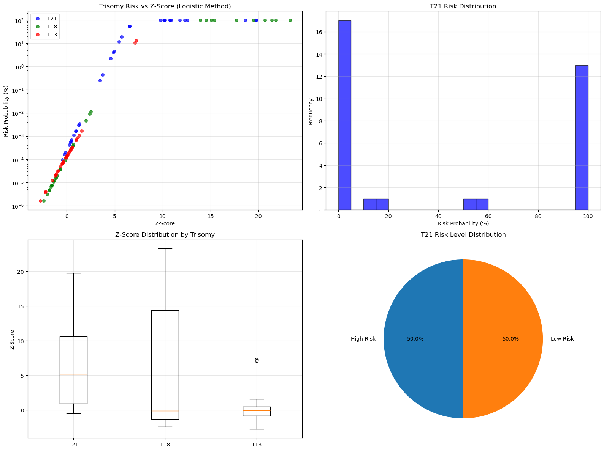

# Read the new dataset
df_jk = pd.read_csv('/mnt/rdisk/duydao/khuongduying.github.io/statistics/JK_report.csv')Risk Score Calculation for Chromosomes 13, 18, and 21 Using Logistic Approach
# Filter for high risk cases based on the existing risk columns
# Create boolean mask for high risk cases using the existing risk assessment columns
high_risk_mask = (
(df_jk['T21 risk'].str.lower() == 'high') |
(df_jk['T18 risk'].str.lower() == 'high') |
(df_jk['T13 risk'].str.lower() == 'high')
)
# Filter the dataframe to keep only high risk cases
df_jk_high_risk = df_jk[high_risk_mask]
print(f"Original dataset: {len(df_jk)} rows")
print(f"High risk cases: {len(df_jk_high_risk)} rows")
print(f"Percentage of high risk cases: {len(df_jk_high_risk)/len(df_jk)*100:.1f}%")
# Show breakdown by risk type
print("\nRisk breakdown:")
print(f"T21 high risk: {(df_jk['T21 risk'].str.lower() == 'high').sum()} cases")
print(f"T18 high risk: {(df_jk['T18 risk'].str.lower() == 'high').sum()} cases")
print(f"T13 high risk: {(df_jk['T13 risk'].str.lower() == 'high').sum()} cases")
# Display the filtered results
df_jk_high_risk.head()Original dataset: 441 rows
High risk cases: 29 rows
Percentage of high risk cases: 6.6%
Risk breakdown:
T21 high risk: 17 cases
T18 high risk: 10 cases
T13 high risk: 2 cases| tid | sampleID | ReportType | Datavolumn | note | T13 risk | T18 risk | T21 risk | risk score of T13 | risk score of T18 | ... | Angelman syndrome | Prader–Willi syndrome | 15q26 duplication syndrome | 16p12.2 microdeletion syndrome | 17p13.3 deletion syndrome | Smith-Magenis syndrome | Potocki-Lupski syndrome | 22q11.2 deletion syndrome | 10p14-p13 deletion syndrome\n(DiGeorge 2 syndrome) | 22q11.2 deletion syndrome\n(DiGeorge syndrome) | |
|---|---|---|---|---|---|---|---|---|---|---|---|---|---|---|---|---|---|---|---|---|---|
| 118 | S250102680_L01_4 | N134B-1 | NIPT-BASE | 15M | NaN | low | low | high | 1/8030591900 | 1/5230881157 | ... | NaN | NaN | NaN | NaN | NaN | NaN | NaN | NaN | NaN | NaN |
| 119 | S250102680_L01_2 | N133B-1 | NIPT-BASE | 15M | NaN | low | high | low | 1/612553201 | >1/20 | ... | NaN | NaN | NaN | NaN | NaN | NaN | NaN | NaN | NaN | NaN |
| 120 | S250102680_L01_12 | N134B-2 | NIPT-BASE | 15M | NaN | low | low | high | 1/3441710328 | 1/3006116462 | ... | NaN | NaN | NaN | NaN | NaN | NaN | NaN | NaN | NaN | NaN |
| 121 | S250102680_L01_5 | N134C-1 | NIPT-BASE | 15M | NaN | low | low | high | 1/4792571586 | 1/1290472369 | ... | NaN | NaN | NaN | NaN | NaN | NaN | NaN | NaN | NaN | NaN |
| 126 | S250102680_L01_10 | N133B-2 | NIPT-BASE | 15M | NaN | low | high | low | 1/598816024 | >1/20 | ... | NaN | NaN | NaN | NaN | NaN | NaN | NaN | NaN | NaN | NaN |
5 rows × 132 columns
# Save the results dataframe to CSV
results_df.to_csv('/mnt/rdisk/duydao/khuongduying.github.io/statistics/trisomy_risk_results.csv', index=False)
print("Results saved to: /mnt/rdisk/duydao/khuongduying.github.io/statistics/trisomy_risk_results.csv")
print(f"Saved {len(results_df)} rows with {len(results_df.columns)} columns")Results saved to: /mnt/rdisk/duydao/khuongduying.github.io/statistics/trisomy_risk_results.csv
Saved 34 rows with 144 columnsimport pandas as pd
import numpy as np
import matplotlib.pyplot as plt
def calculate_trisomy_risk_logistic(z_score, trisomy_type='T21', prior_risk=None):
"""
Calculate trisomy risk using logistic approach for chromosomes 13, 18, and 21
Parameters:
- z_score: observed z-score
- trisomy_type: 'T21', 'T18', or 'T13'
- prior_risk: a priori risk (if None, uses default values)
Returns:
- probability (0-1)
"""
# Default prior risks based on maternal age and clinical data
if prior_risk is None:
prior_risks = {
'T21': 0.001, # 1 in 1000 (0.1%)
'T18': 0.0003, # 1 in 3333 (0.03%)
'T13': 0.0002 # 1 in 5000 (0.02%)
}
prior_risk = prior_risks.get(trisomy_type, 0.001)
# Convert prior risk to log odds
prior_log_odds = np.log(prior_risk / (1 - prior_risk))
# Trisomy-specific parameters for logistic function
# These are tuned based on clinical performance expectations
logistic_params = {
'T21': {'coefficient': 2.0, 'intercept': -6.0}, # Most sensitive
'T18': {'coefficient': 1.8, 'intercept': -5.5}, # Moderate sensitivity
'T13': {'coefficient': 1.6, 'intercept': -5.0} # Lower sensitivity
}
params = logistic_params.get(trisomy_type, logistic_params['T21'])
# Z-score contribution to log odds
z_contribution = params['coefficient'] * z_score + params['intercept']
# Combined log odds
combined_log_odds = prior_log_odds + z_contribution
# Convert back to probability using logistic function
probability = 1 / (1 + np.exp(-combined_log_odds))
return probability
def classify_risk_level(probability_pct):
"""Classify risk level based on probability percentage"""
if probability_pct >= 99:
return "Very High Risk"
elif probability_pct >= 90:
return "High Risk"
elif probability_pct >= 50:
return "Moderate Risk"
elif probability_pct >= 10:
return "Low-Moderate Risk"
elif probability_pct >= 1:
return "Low Risk"
else:
return "Very Low Risk"
def calculate_all_trisomy_risks(df):
"""
Calculate risk scores for all three trisomies
Assumes columns: score21, score18, score13
"""
results_df = df.copy()
# Calculate risks for each trisomy
trisomies = {
'T21': 'score21',
'T18': 'score18',
'T13': 'score13'
}
for trisomy, z_score_col in trisomies.items():
if z_score_col in df.columns:
# Calculate probabilities
prob_col = f'{trisomy.lower()}_probability'
prob_pct_col = f'{trisomy.lower()}_probability_pct'
risk_level_col = f'{trisomy.lower()}_risk_level'
results_df[prob_col] = df[z_score_col].apply(
lambda x: calculate_trisomy_risk_logistic(x, trisomy) if pd.notna(x) else np.nan
)
results_df[prob_pct_col] = results_df[prob_col] * 100
results_df[risk_level_col] = results_df[prob_pct_col].apply(
lambda x: classify_risk_level(x) if pd.notna(x) else "Unknown"
)
else:
print(f"Warning: Column {z_score_col} not found in dataframe")
return results_df# # Read your data
# df = pd.read_csv('/mnt/rdisk/duydao/khuongduying.github.io/statistics/T21_high.csv')Add 5 random samples with T21 z-scores between 3 and 5
# Create DataFrame from the high risk dataset
df = df_jk_high_risk.copy()
# Set random seed for reproducibility
random.seed(42)
np.random.seed(42)
# Create 5 new samples
new_samples = []
for i in range(5):
# Generate random T21 z-score between 3 and 5
random_z21 = np.random.uniform(3.0, 5.0)
# Create a new sample row
new_sample = {
'tid': f'RANDOM_SAMPLE_{i+1}',
'sampleID': f'TEST_{i+1}',
'ReportType': 'NIPT-TEST',
'Datavolumn': '10M',
'note': np.nan,
'T13 risk': 'low',
'T18 risk': 'low',
'T21 risk': 'moderate',
'risk score of T13': '1/10000000',
'risk score of T18': '1/10000000',
'risk score of T21': '1/100',
'rawdata': np.random.uniform(20, 60),
'uniqueread': np.random.uniform(15, 40),
'uniqueGC': np.random.uniform(35, 45),
'readQC': 'Passed',
'GCQC': 'Passed',
'fetalfraction': np.random.uniform(8, 20),
'fetalgender': np.random.choice(['M', 'F']),
'score21': random_z21, # Our target z-score
'score18': np.random.uniform(-2, 0), # Random T18 z-score (normal range)
'score13': np.random.uniform(-1, 1), # Random T13 z-score (normal range)
'score22': np.random.uniform(-2, 2), # Random other chromosome scores
'scoreXO': np.random.uniform(-3, 3),
'scoreXXX': np.random.uniform(-3, 3),
'scoreXXY': np.random.uniform(-3, 3),
'scoreXYY': np.random.uniform(-3, 3)
}
# Fill in all other columns with NaN to match the original dataframe structure
for col in df_jk_high_risk.columns:
if col not in new_sample:
new_sample[col] = np.nan
new_samples.append(new_sample)
# Create DataFrame from new samples
new_df = pd.DataFrame(new_samples)
# Ensure column order matches original dataframe
new_df = new_df.reindex(columns=df_jk_high_risk.columns)
# Append to original dataframe
df = pd.concat([df_jk_high_risk, new_df], ignore_index=True)
print(f"Added 5 random samples. DataFrame now has {len(df)} rows.")
print("\nNew samples added:")
print(df[['tid', 'score21', 'score18', 'score13']].tail())Added 5 random samples. DataFrame now has 34 rows.
New samples added:
tid score21 score18 score13
29 RANDOM_SAMPLE_1 3.749080 -1.800050 -0.081502
30 RANDOM_SAMPLE_2 4.877105 -1.136110 -0.417542
31 RANDOM_SAMPLE_3 4.570352 -0.639385 -0.099001
32 RANDOM_SAMPLE_4 3.461788 -0.181359 -0.482440
33 RANDOM_SAMPLE_5 4.939169 -1.346918 0.140888# Calculate risks for all trisomies
results_df = calculate_all_trisomy_risks(df)
# Display results
print("Trisomy Risk Calculation Results:")
print("=" * 80)
# Show available columns first
print("Available columns:", results_df.columns.tolist())
print()
# Display T21 results (since we know this column exists)
if 'score21' in results_df.columns:
print("Chromosome 21 (T21) Results:")
display_cols = ['tid', 'score21', 't21_probability_pct', 't21_risk_level']
available_cols = [col for col in display_cols if col in results_df.columns]
print(results_df[available_cols].head(20))
print()
# Display T18 results if available
if 'score18' in results_df.columns:
print("Chromosome 18 (T18) Results:")
display_cols = ['tid', 'score18', 't18_probability_pct', 't18_risk_level']
available_cols = [col for col in display_cols if col in results_df.columns]
print(results_df[available_cols].head(20))
print()
# Display T13 results if available
if 'score13' in results_df.columns:
print("Chromosome 13 (T13) Results:")
display_cols = ['tid', 'score13', 't13_probability_pct', 't13_risk_level']
available_cols = [col for col in display_cols if col in results_df.columns]
print(results_df[available_cols].head(20))
print()
# Summary statistics
print("Summary Statistics:")
print("=" * 50)
for trisomy in ['T21', 'T18', 'T13']:
z_col = f'score{trisomy[-2:]}'
prob_col = f'{trisomy.lower()}_probability_pct'
if z_col in results_df.columns and prob_col in results_df.columns:
print(f"\n{trisomy} Statistics:")
print(f" Z-scores - Mean: {results_df[z_col].mean():.2f}, "
f"Std: {results_df[z_col].std():.2f}, "
f"Range: {results_df[z_col].min():.1f} to {results_df[z_col].max():.1f}")
print(f" Risk % - Mean: {results_df[prob_col].mean():.1f}%, "
f"Median: {results_df[prob_col].median():.1f}%, "
f"Max: {results_df[prob_col].max():.1f}%")
# Risk level distribution
if f'{trisomy.lower()}_risk_level' in results_df.columns:
risk_dist = results_df[f'{trisomy.lower()}_risk_level'].value_counts()
print(f" Risk Distribution:")
for level, count in risk_dist.items():
pct = (count / len(results_df)) * 100
print(f" {level}: {count} ({pct:.1f}%)")Trisomy Risk Calculation Results:
================================================================================
Available columns: ['tid', 'sampleID', 'ReportType', 'Datavolumn', 'note', 'T13 risk', 'T18 risk', 'T21 risk', 'risk score of T13', 'risk score of T18', 'risk score of T21', 'rawdata', 'uniqueread', 'uniqueGC', 'readQC', 'GCQC', 'fetalfraction', 'fetalgender', 'score1', 'score2', 'score3', 'score4', 'score5', 'score6', 'score7', 'score8', 'score9', 'score10', 'score11', 'score12', 'score13', 'score14', 'score15', 'score16', 'score17', 'score18', 'score19', 'score20', 'score21', 'score22', 'scoreXO', 'scoreXXX', 'scoreXXY', 'scoreXYY', 'Partial monosomy 1p', 'Monosomy 1q21→q32', 'Monosomy 1q42→qter', 'Trisomy 1q23→qter', 'Partial monosomy 2p', 'Partial trisomy 2p', 'Partial monosomy 2q', 'Partial trisomy 2q', 'Monosomy 3p11→p21', 'Monosomy 3p25→pter', 'Partial trisomy 3p', 'Partial monosomy 3q', 'Partial trisomy 3q', 'Partial monosomy3p and partial trisomy 3q', 'Partial monosomy 4p', 'Partial trisomy 4p', 'Monosomy 4q21→q31', 'Monosomy 4q31→qter', 'Partial trisomy 4q', 'Partial monosomy 4p and partial trisomy 4q', 'Partial trisomy 5p', 'Partial monosomy 5q', 'Partial trisomy 5q', 'Partial trisomy 6p', 'Partial monosomy 6q', 'Partial trisomy 6q', 'Partial monosomy 7p', 'Partial trisomy 7p', 'monosomy 7q32→qter', 'Trisomy 7q21→q31', 'Trisomy 7q32→qter', 'Partial trisomy 8q', 'Partial monosomy 9p', 'Partial trisomy 9p', 'Partial monosomy 9q', 'Partial trisomy 9q', 'Partial monosomy 10p', 'Partial trisomy 10p', 'Partial monosomy 10q', 'Partial trisomy 10q', 'Partial trisomy 11p', 'Partial monosomy 11q', 'Partial trisomy 11q', 'Partial monosomy 12p', 'Partial trisomy 12p', 'Partial trisomy 12q', 'Monosomy 13q14', 'Monosomy 13q21→qter', 'Trisomy 13cen→q14', 'Trisomy 13q21→qter', 'Partial trisomy 14', 'Trisomy 14q24-qter', 'supernumerary inv dup (15)', 'Trisomy 15q22→qter', 'Partial trisomy 16p', 'Partial monosomy 16q', 'Partial trisomy 16q', 'Trisomy 17pter→q21', 'Partial monosomy 18p', 'Partial tetrasomy 18p', 'Trisomy 18pter→q12', 'Monosomy 18q21→qter', 'Trisomy 18q12→qter', 'Partial monosomy 20p', 'Trisomy 20p', 'Partial monosomy 21', '1p36 deletion syndrome', '2p16.1-p15 deletion syndrome', '2q33.1 deletion syndrome', '2q37 deletion syndrome', '3p deletion syndrome', '4p16.31 deletion syndrome', 'Cri-du-chat syndrome', '7q11.2 deletion syndrome', 'Langer-Giedion syndrome', '8p23.1 deletion syndrome', '8p23.1 duplication syndrome', '11q23.3-q25 deletion syndrome', 'Angelman syndrome', 'Prader–Willi syndrome', '15q26 duplication syndrome', '16p12.2 microdeletion syndrome', '17p13.3 deletion syndrome', 'Smith-Magenis syndrome', 'Potocki-Lupski syndrome', '22q11.2 deletion syndrome', '10p14-p13 deletion syndrome\n(DiGeorge 2 syndrome)', '22q11.2 deletion syndrome\n(DiGeorge syndrome)', 't21_probability', 't21_probability_pct', 't21_risk_level', 't18_probability', 't18_probability_pct', 't18_risk_level', 't13_probability', 't13_probability_pct', 't13_risk_level']
Chromosome 21 (T21) Results:
tid score21 t21_probability_pct t21_risk_level
0 S250102680_L01_4 12.306 99.999175 Very High Risk
1 S250102680_L01_2 0.257 0.000415 Very Low Risk
2 S250102680_L01_12 10.745 99.981282 Very High Risk
3 S250102680_L01_5 12.573 99.999516 Very High Risk
4 S250102680_L01_10 0.496 0.000669 Very Low Risk
5 S250102680_L01_13 11.793 99.997698 Very High Risk
6 S250127334_L01_18 0.743 0.001097 Very Low Risk
7 S250127345_L01_13 0.441 0.000599 Very Low Risk
8 S250127408_L01_13 1.314 0.003435 Very Low Risk
9 S250127493_L01_17 10.215 99.945992 Very High Risk
10 S250127522_L01_18 0.961 0.001696 Very Low Risk
11 S250127522_L01_17 10.114 99.933910 Very High Risk
12 S250127526_L01_42 10.745 99.981282 Very High Risk
13 S250127614_L01_17 10.865 99.985275 Very High Risk
14 S250127727_L01_17 9.775 99.869890 Very High Risk
15 S250130739_L01_4 -0.124 0.000194 Very Low Risk
16 S250130739_L01_3 19.710 100.000000 Very High Risk
17 S250130884_L01_19 6.560 55.311020 Moderate Risk
18 S250130884_L01_26 6.546 54.617932 Moderate Risk
19 S250130783_L01_26 5.449 11.828679 Low-Moderate Risk
Chromosome 18 (T18) Results:
tid score18 t18_probability_pct t18_risk_level
0 S250102680_L01_4 -2.045 0.000003 Very Low Risk
1 S250102680_L01_2 17.715 99.999999 Very High Risk
2 S250102680_L01_12 -1.270 0.000012 Very Low Risk
3 S250102680_L01_5 -1.132 0.000016 Very Low Risk
4 S250102680_L01_10 19.488 100.000000 Very High Risk
5 S250102680_L01_13 -1.628 0.000007 Very Low Risk
6 S250127334_L01_18 13.940 99.998967 Very High Risk
7 S250127345_L01_13 -1.840 0.000004 Very Low Risk
8 S250127408_L01_13 -2.394 0.000002 Very Low Risk
9 S250127493_L01_17 0.716 0.000445 Very Low Risk
10 S250127522_L01_18 15.098 99.999872 Very High Risk
11 S250127522_L01_17 -0.081 0.000106 Very Low Risk
12 S250127526_L01_42 -1.547 0.000008 Very Low Risk
13 S250127614_L01_17 0.502 0.000303 Very Low Risk
14 S250127727_L01_17 0.641 0.000389 Very Low Risk
15 S250130739_L01_4 21.369 100.000000 Very High Risk
16 S250130739_L01_3 -1.324 0.000011 Very Low Risk
17 S250130884_L01_19 -1.544 0.000008 Very Low Risk
18 S250130884_L01_26 2.393 0.009105 Very Low Risk
19 S250130783_L01_26 2.009 0.004562 Very Low Risk
Chromosome 13 (T13) Results:
tid score13 t13_probability_pct t13_risk_level
0 S250102680_L01_4 -0.007 0.000133 Very Low Risk
1 S250102680_L01_2 -0.374 0.000074 Very Low Risk
2 S250102680_L01_12 0.562 0.000331 Very Low Risk
3 S250102680_L01_5 0.233 0.000196 Very Low Risk
4 S250102680_L01_10 -0.321 0.000081 Very Low Risk
5 S250102680_L01_13 0.406 0.000258 Very Low Risk
6 S250127334_L01_18 0.334 0.000230 Very Low Risk
7 S250127345_L01_13 7.110 10.517588 Low-Moderate Risk
8 S250127408_L01_13 7.254 12.891423 Low-Moderate Risk
9 S250127493_L01_17 -1.101 0.000023 Very Low Risk
10 S250127522_L01_18 0.989 0.000656 Very Low Risk
11 S250127522_L01_17 -1.505 0.000012 Very Low Risk
12 S250127526_L01_42 -0.457 0.000065 Very Low Risk
13 S250127614_L01_17 -0.639 0.000048 Very Low Risk
14 S250127727_L01_17 -1.155 0.000021 Very Low Risk
15 S250130739_L01_4 0.055 0.000147 Very Low Risk
16 S250130739_L01_3 1.163 0.000867 Very Low Risk
17 S250130884_L01_19 -2.197 0.000004 Very Low Risk
18 S250130884_L01_26 -1.204 0.000020 Very Low Risk
19 S250130783_L01_26 -0.956 0.000029 Very Low Risk
Summary Statistics:
==================================================
T21 Statistics:
Z-scores - Mean: 6.45, Std: 5.94, Range: -0.5 to 19.8
Risk % - Mean: 42.7%, Median: 8.2%, Max: 100.0%
Risk Distribution:
Very Low Risk: 14 (41.2%)
Very High Risk: 13 (38.2%)
Low Risk: 3 (8.8%)
Moderate Risk: 2 (5.9%)
Low-Moderate Risk: 2 (5.9%)
T18 Statistics:
Z-scores - Mean: 4.97, Std: 9.01, Range: -2.4 to 23.3
Risk % - Mean: 29.4%, Median: 0.0%, Max: 100.0%
Risk Distribution:
Very Low Risk: 24 (70.6%)
Very High Risk: 10 (29.4%)
T13 Statistics:
Z-scores - Mean: 0.18, Std: 2.04, Range: -2.8 to 7.3
Risk % - Mean: 0.7%, Median: 0.0%, Max: 12.9%
Risk Distribution:
Very Low Risk: 32 (94.1%)
Low-Moderate Risk: 2 (5.9%)def probability_to_ratio(probability):
"""
Convert probability to "1 in X" format
Parameters:
- probability: float between 0 and 1
Returns:
- string in format "1 in X" or ">99%" for very high probabilities
"""
if pd.isna(probability) or probability <= 0:
return "Invalid"
elif probability >= 0.99:
return f">99% ({probability*100:.1f}%)"
elif probability >= 0.01: # 1% or higher, show as percentage
return f"{probability*100:.1f}%"
else:
# Convert to "1 in X" format
ratio = int(round(1 / probability))
return f"1 in {ratio:,}"
def format_probability_comprehensive(probability):
"""
Show both percentage and ratio format for comprehensive view
"""
if pd.isna(probability) or probability <= 0:
return "Invalid", "Invalid"
# Percentage format
pct_format = f"{probability*100:.3f}%" if probability < 0.01 else f"{probability*100:.1f}%"
# Ratio format
if probability >= 0.99:
ratio_format = ">99%"
elif probability >= 0.01:
ratio_format = f"{probability*100:.1f}%"
else:
ratio = int(round(1 / probability))
ratio_format = f"1 in {ratio:,}"
return pct_format, ratio_format
# Add ratio columns to results
def add_ratio_columns(results_df):
"""Add ratio format columns for all trisomies"""
for trisomy in ['T21', 'T18', 'T13']:
prob_col = f'{trisomy.lower()}_probability'
ratio_col = f'{trisomy.lower()}_ratio'
comprehensive_col = f'{trisomy.lower()}_risk_summary'
if prob_col in results_df.columns:
# Add simple ratio column
results_df[ratio_col] = results_df[prob_col].apply(probability_to_ratio)
# Add comprehensive format (percentage + ratio)
results_df[comprehensive_col] = results_df[prob_col].apply(
lambda x: f"{format_probability_comprehensive(x)[0]} ({format_probability_comprehensive(x)[1]})"
if pd.notna(x) else "Unknown"
)
return results_df
# Apply the ratio formatting
results_df = add_ratio_columns(results_df)
print("Trisomy Risk Results with Ratio Format:")
print("=" * 100)
# Display T21 results with ratio format
if 'score21' in results_df.columns:
print("Chromosome 21 (T21) Results:")
display_cols = ['tid', 'score21', 't21_probability_pct', 't21_ratio', 't21_risk_level']
available_cols = [col for col in display_cols if col in results_df.columns]
print(results_df[available_cols].head(10))
print()
# Display T18 results if available
if 'score18' in results_df.columns:
print("Chromosome 18 (T18) Results:")
display_cols = ['tid', 'score18', 't18_probability_pct', 't18_ratio', 't18_risk_level']
available_cols = [col for col in display_cols if col in results_df.columns]
print(results_df[available_cols].head(10))
print()
# Display T13 results if available
if 'score13' in results_df.columns:
print("Chromosome 13 (T13) Results:")
display_cols = ['tid', 'score13', 't13_probability_pct', 't13_ratio', 't13_risk_level']
available_cols = [col for col in display_cols if col in results_df.columns]
print(results_df[available_cols].head(10))
print()Trisomy Risk Results with Ratio Format:
====================================================================================================
Chromosome 21 (T21) Results:
tid score21 t21_probability_pct t21_ratio \
0 S250102680_L01_4 12.306 99.999175 >99% (100.0%)
1 S250102680_L01_2 0.257 0.000415 1 in 241,050
2 S250102680_L01_12 10.745 99.981282 >99% (100.0%)
3 S250102680_L01_5 12.573 99.999516 >99% (100.0%)
4 S250102680_L01_10 0.496 0.000669 1 in 149,457
5 S250102680_L01_13 11.793 99.997698 >99% (100.0%)
6 S250127334_L01_18 0.743 0.001097 1 in 91,196
7 S250127345_L01_13 0.441 0.000599 1 in 166,835
8 S250127408_L01_13 1.314 0.003435 1 in 29,109
9 S250127493_L01_17 10.215 99.945992 >99% (99.9%)
t21_risk_level
0 Very High Risk
1 Very Low Risk
2 Very High Risk
3 Very High Risk
4 Very Low Risk
5 Very High Risk
6 Very Low Risk
7 Very Low Risk
8 Very Low Risk
9 Very High Risk
Chromosome 18 (T18) Results:
tid score18 t18_probability_pct t18_ratio \
0 S250102680_L01_4 -2.045 0.000003 1 in 32,359,819
1 S250102680_L01_2 17.715 99.999999 >99% (100.0%)
2 S250102680_L01_12 -1.270 0.000012 1 in 8,019,833
3 S250102680_L01_5 -1.132 0.000016 1 in 6,255,854
4 S250102680_L01_10 19.488 100.000000 >99% (100.0%)
5 S250102680_L01_13 -1.628 0.000007 1 in 15,276,528
6 S250127334_L01_18 13.940 99.998967 >99% (100.0%)
7 S250127345_L01_13 -1.840 0.000004 1 in 22,374,402
8 S250127408_L01_13 -2.394 0.000002 1 in 60,649,870
9 S250127493_L01_17 0.716 0.000445 1 in 224,725
t18_risk_level
0 Very Low Risk
1 Very High Risk
2 Very Low Risk
3 Very Low Risk
4 Very High Risk
5 Very Low Risk
6 Very High Risk
7 Very Low Risk
8 Very Low Risk
9 Very Low Risk
Chromosome 13 (T13) Results:
tid score13 t13_probability_pct t13_ratio \
0 S250102680_L01_4 -0.007 0.000133 1 in 750,275
1 S250102680_L01_2 -0.374 0.000074 1 in 1,349,701
2 S250102680_L01_12 0.562 0.000331 1 in 301,884
3 S250102680_L01_5 0.233 0.000196 1 in 511,036
4 S250102680_L01_10 -0.321 0.000081 1 in 1,239,965
5 S250102680_L01_13 0.406 0.000258 1 in 387,471
6 S250127334_L01_18 0.334 0.000230 1 in 434,780
7 S250127345_L01_13 7.110 10.517588 10.5%
8 S250127408_L01_13 7.254 12.891423 12.9%
9 S250127493_L01_17 -1.101 0.000023 1 in 4,319,255
t13_risk_level
0 Very Low Risk
1 Very Low Risk
2 Very Low Risk
3 Very Low Risk
4 Very Low Risk
5 Very Low Risk
6 Very Low Risk
7 Low-Moderate Risk
8 Low-Moderate Risk
9 Very Low Risk
def probability_to_ratio_custom(probability):
"""
Convert probability to "1 in X" format with custom logic
- Use ">1/20" if probability > 5%
- Otherwise use "1 in X" format
"""
if pd.isna(probability) or probability <= 0:
return "Invalid"
elif probability > 0.05: # More than 5%
return ">1/20"
else:
# Convert to "1 in X" format
ratio = int(round(1 / probability))
return f"1/{ratio:,}"
def classify_risk_level_custom(probability_pct):
"""
Classify risk level with custom logic:
- High Risk if >5% probability
- Low Risk otherwise
"""
if pd.isna(probability_pct):
return "Unknown"
elif probability_pct > 5.0: # More than 5%
return "High Risk"
else:
return "Low Risk"
def calculate_all_trisomy_risks_custom(df):
"""
Calculate risk scores for all three trisomies with custom formatting
"""
results_df = df.copy()
# Calculate risks for each trisomy
trisomies = {
'T21': 'score21',
'T18': 'score18',
'T13': 'score13'
}
for trisomy, z_score_col in trisomies.items():
if z_score_col in df.columns:
# Calculate probabilities
prob_col = f'{trisomy.lower()}_probability'
prob_pct_col = f'{trisomy.lower()}_probability_pct'
ratio_col = f'{trisomy.lower()}_ratio'
risk_level_col = f'{trisomy.lower()}_risk_level'
# Calculate base probability
results_df[prob_col] = df[z_score_col].apply(
lambda x: calculate_trisomy_risk_logistic(x, trisomy) if pd.notna(x) else np.nan
)
# Convert to percentage
results_df[prob_pct_col] = results_df[prob_col] * 100
# Apply custom ratio formatting
results_df[ratio_col] = results_df[prob_col].apply(probability_to_ratio_custom)
# Apply custom risk level classification
results_df[risk_level_col] = results_df[prob_pct_col].apply(classify_risk_level_custom)
else:
print(f"Warning: Column {z_score_col} not found in dataframe")
return results_df
# Recalculate with custom logic
results_df = calculate_all_trisomy_risks_custom(df)
print("Trisomy Risk Results with Custom Logic:")
print("=" * 100)
print("Custom Rules:")
print("- Probability ratio: '>1/20' if >5%, otherwise '1/X'")
print("- Risk level: 'High Risk' if >5%, otherwise 'Low Risk'")
print("=" * 100)
# Display T21 results with custom format
if 'score21' in results_df.columns:
print("\nChromosome 21 (T21) Results:")
display_cols = ['tid', 'score21', 't21_probability_pct', 't21_ratio', 't21_risk_level']
available_cols = [col for col in display_cols if col in results_df.columns]
print(results_df[available_cols].head(15))
# Display T18 results if available
if 'score18' in results_df.columns:
print("\nChromosome 18 (T18) Results:")
display_cols = ['tid', 'score18', 't18_probability_pct', 't18_ratio', 't18_risk_level']
available_cols = [col for col in display_cols if col in results_df.columns]
print(results_df[available_cols].head(15))
# Display T13 results if available
if 'score13' in results_df.columns:
print("\nChromosome 13 (T13) Results:")
display_cols = ['tid', 'score13', 't13_probability_pct', 't13_ratio', 't13_risk_level']
available_cols = [col for col in display_cols if col in results_df.columns]
print(results_df[available_cols].head(15))Trisomy Risk Results with Custom Logic:
====================================================================================================
Custom Rules:
- Probability ratio: '>1/20' if >5%, otherwise '1/X'
- Risk level: 'High Risk' if >5%, otherwise 'Low Risk'
====================================================================================================
Chromosome 21 (T21) Results:
tid score21 t21_probability_pct t21_ratio t21_risk_level
0 S250102680_L01_4 12.306 99.999175 >1/20 High Risk
1 S250102680_L01_2 0.257 0.000415 1/241,050 Low Risk
2 S250102680_L01_12 10.745 99.981282 >1/20 High Risk
3 S250102680_L01_5 12.573 99.999516 >1/20 High Risk
4 S250102680_L01_10 0.496 0.000669 1/149,457 Low Risk
5 S250102680_L01_13 11.793 99.997698 >1/20 High Risk
6 S250127334_L01_18 0.743 0.001097 1/91,196 Low Risk
7 S250127345_L01_13 0.441 0.000599 1/166,835 Low Risk
8 S250127408_L01_13 1.314 0.003435 1/29,109 Low Risk
9 S250127493_L01_17 10.215 99.945992 >1/20 High Risk
10 S250127522_L01_18 0.961 0.001696 1/58,969 Low Risk
11 S250127522_L01_17 10.114 99.933910 >1/20 High Risk
12 S250127526_L01_42 10.745 99.981282 >1/20 High Risk
13 S250127614_L01_17 10.865 99.985275 >1/20 High Risk
14 S250127727_L01_17 9.775 99.869890 >1/20 High Risk
Chromosome 18 (T18) Results:
tid score18 t18_probability_pct t18_ratio \
0 S250102680_L01_4 -2.045 0.000003 1/32,359,819
1 S250102680_L01_2 17.715 99.999999 >1/20
2 S250102680_L01_12 -1.270 0.000012 1/8,019,833
3 S250102680_L01_5 -1.132 0.000016 1/6,255,854
4 S250102680_L01_10 19.488 100.000000 >1/20
5 S250102680_L01_13 -1.628 0.000007 1/15,276,528
6 S250127334_L01_18 13.940 99.998967 >1/20
7 S250127345_L01_13 -1.840 0.000004 1/22,374,402
8 S250127408_L01_13 -2.394 0.000002 1/60,649,870
9 S250127493_L01_17 0.716 0.000445 1/224,725
10 S250127522_L01_18 15.098 99.999872 >1/20
11 S250127522_L01_17 -0.081 0.000106 1/943,384
12 S250127526_L01_42 -1.547 0.000008 1/13,203,970
13 S250127614_L01_17 0.502 0.000303 1/330,325
14 S250127727_L01_17 0.641 0.000389 1/257,206
t18_risk_level
0 Low Risk
1 High Risk
2 Low Risk
3 Low Risk
4 High Risk
5 Low Risk
6 High Risk
7 Low Risk
8 Low Risk
9 Low Risk
10 High Risk
11 Low Risk
12 Low Risk
13 Low Risk
14 Low Risk
Chromosome 13 (T13) Results:
tid score13 t13_probability_pct t13_ratio \
0 S250102680_L01_4 -0.007 0.000133 1/750,275
1 S250102680_L01_2 -0.374 0.000074 1/1,349,701
2 S250102680_L01_12 0.562 0.000331 1/301,884
3 S250102680_L01_5 0.233 0.000196 1/511,036
4 S250102680_L01_10 -0.321 0.000081 1/1,239,965
5 S250102680_L01_13 0.406 0.000258 1/387,471
6 S250127334_L01_18 0.334 0.000230 1/434,780
7 S250127345_L01_13 7.110 10.517588 >1/20
8 S250127408_L01_13 7.254 12.891423 >1/20
9 S250127493_L01_17 -1.101 0.000023 1/4,319,255
10 S250127522_L01_18 0.989 0.000656 1/152,451
11 S250127522_L01_17 -1.505 0.000012 1/8,243,976
12 S250127526_L01_42 -0.457 0.000065 1/1,541,388
13 S250127614_L01_17 -0.639 0.000048 1/2,062,426
14 S250127727_L01_17 -1.155 0.000021 1/4,709,034
t13_risk_level
0 Low Risk
1 Low Risk
2 Low Risk
3 Low Risk
4 Low Risk
5 Low Risk
6 Low Risk
7 High Risk
8 High Risk
9 Low Risk
10 Low Risk
11 Low Risk
12 Low Risk
13 Low Risk
14 Low Risk Visualization of Results
# Create comprehensive visualization
fig, axes = plt.subplots(2, 2, figsize=(16, 12))
# Available trisomies for plotting
available_trisomies = []
for trisomy in ['T21', 'T18', 'T13']:
z_col = f'score{trisomy[-2:]}'
prob_col = f'{trisomy.lower()}_probability_pct'
if z_col in results_df.columns and prob_col in results_df.columns:
available_trisomies.append((trisomy, z_col, prob_col))
# Plot 1: Z-score vs Risk Probability for all available trisomies
colors = ['blue', 'green', 'red']
for i, (trisomy, z_col, prob_col) in enumerate(available_trisomies):
axes[0,0].scatter(results_df[z_col], results_df[prob_col],
alpha=0.7, label=trisomy, color=colors[i % len(colors)], s=30)
axes[0,0].set_xlabel('Z-Score')
axes[0,0].set_ylabel('Risk Probability (%)')
axes[0,0].set_title('Trisomy Risk vs Z-Score (Logistic Method)')
axes[0,0].legend()
axes[0,0].grid(True, alpha=0.3)
axes[0,0].set_yscale('log') # Log scale to better see low probabilities
# Plot 2: Risk distribution histogram for T21 (if available)
if len(available_trisomies) > 0:
trisomy, z_col, prob_col = available_trisomies[0] # Use first available
axes[0,1].hist(results_df[prob_col].dropna(), bins=20, alpha=0.7, color='blue', edgecolor='black')
axes[0,1].set_xlabel('Risk Probability (%)')
axes[0,1].set_ylabel('Frequency')
axes[0,1].set_title(f'{trisomy} Risk Distribution')
axes[0,1].grid(True, alpha=0.3)
# Plot 3: Comparison of z-scores across trisomies (if multiple available)
if len(available_trisomies) > 1:
z_data = []
labels = []
for trisomy, z_col, prob_col in available_trisomies:
z_data.append(results_df[z_col].dropna())
labels.append(trisomy)
axes[1,0].boxplot(z_data, labels=labels)
axes[1,0].set_ylabel('Z-Score')
axes[1,0].set_title('Z-Score Distribution by Trisomy')
axes[1,0].grid(True, alpha=0.3)
else:
axes[1,0].text(0.5, 0.5, 'Multiple trisomies\nnot available',
ha='center', va='center', transform=axes[1,0].transAxes)
axes[1,0].set_title('Z-Score Comparison (Not Available)')
# Plot 4: Risk level pie chart for T21 (if available)
if len(available_trisomies) > 0:
trisomy, z_col, prob_col = available_trisomies[0]
risk_col = f'{trisomy.lower()}_risk_level'
if risk_col in results_df.columns:
risk_counts = results_df[risk_col].value_counts()
axes[1,1].pie(risk_counts.values, labels=risk_counts.index, autopct='%1.1f%%', startangle=90)
axes[1,1].set_title(f'{trisomy} Risk Level Distribution')
else:
axes[1,1].text(0.5, 0.5, 'Risk levels\nnot calculated',
ha='center', va='center', transform=axes[1,1].transAxes)
plt.tight_layout()
plt.show()